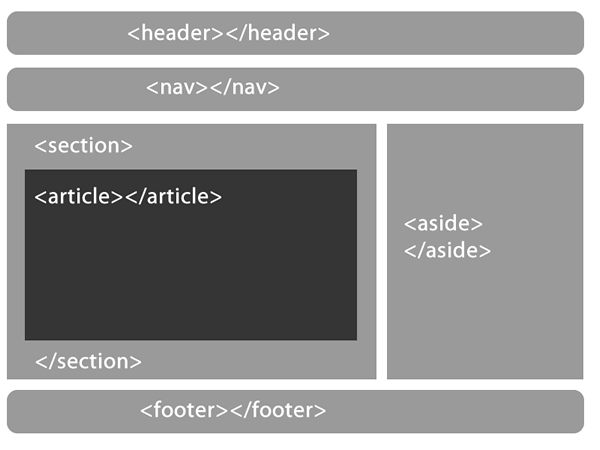

Disciplinas
FUNDAMENTOS DE WEB-T01-2024-1. Concluído
Materiais
Vídeo 1 - Fundamentos de Internet e Web - HTML5 - Hypertext Markup Language/Versão 5. sendProf° ministrante: Júlio Cezar Estrela. (UNIVESP)
Conteúdo
FUNDAMENTOS DE INTERNET E WEB.
HTML5 - Hypertext Markup Language/Versão 5.
- ROTEIRO
- Introdução
- O HTML5
- Estrutura do documento
- Grupos de conteúdo
- Semântica dos elementos
- Edição
- Tags iniciais, listas e links, textos, tabelas, imagens, formulários, conteúdo embutido
Introdução.
Porque HTML5?- Porque o HTML4 não traz um diferencial real para a semântica do código
- Pois facilita a manipulação de elementos do documento html
- Porque ele se integra mais facilmente ao CSS e Java Script
- Por que ele modifica a forma como escrevemos código e organizamos a informação na página
- Mais semântica e menos código
- Mais interatividade sem a instalação de plugins
- Códigos interoperáveis para futuros dispositivos
- Facilita a reutilização da informação de diversas formas
Estrutura do documento/página.
A estrutura básica de uma página na nova versão do HTML é descrita abaixo.
Estrutura do documento.
Vamos então analisar uma a uma o que significa cada uma das partes apresentadas anteriormente
- header
- Cabeçalho. Indica a introdução de um tema abordado na página. Quanto mais no começo do código está, mais relevante para os mecanismos de busca.
- nav
- Agrupa uma série de links, desde que sejam blocos de navegação principal (nav. Primária, secundária e in page).
- Footer
- Pode ser utilizado dentro da tag section, indicando o final de um tema, porém não é muito útil.
Estrutura do documento.
- Aside:
- Faz referência ao conteúdo principal que o envolve (como se fosse separado do conteúdo principal).
- Quando está dentro de um (article> faz referência ao assunto geral dele, se estiver fora, está relacionado com o conteúdo global do site. Pode estar ou não em uma sidebar
Grupos de conteúdo.
- Article:
- Trata-se de uma área que define o conteúdo principal da página, podendo ser uma composição de formulários, um artigo de notícias, etc. desde que seja um conteúdo independente.
Semântica dos elementos.
- Section:
- Define uma seção dentro de determinado elemento.
- Pode conter um header, um footer e uma nova ordem de títulos, se necessário.
- Pode ser utilizada na tag article para separar notícias, eventos, galeria de fotos, etc.
Semântica dos elementos.
Diferenças entre article x section- article:
- Deve conter o conteúdo principal da página
- Pode ser combinado com o elemento section para formatação de seu conteúdo
- O objetivo é agrupar os principais conteúdos da página
- section:
- Pode conter qualquer tipo de conteúdo
- É a versão mais semântica da div (mas não substitui)
- O objetivo é marcar uma seção da página agrupando conteúdos sobre um mesmo assunto
Edição.
Mais tags do HTML5- hgroup:
- Agrupa uma sequência de títulos (do h1 ao h5)
- áudio/vídeo:
- Inserção de conteúdo multimídia na página, de forma mais simples e segura.
- main:
- Define o conteúdo mais importante, ou seja, aquele que está relacionado com o tópico central da página.
Exemplo Simples.
(!DOCTYPE HTML>
(html lang="en">
(head>
(meta charset=utf-8>
(title>Exemoplo HTML5 doctype(/title>
(/head>
(body> (h1>Tutorial de HTML5 doctype(/h1> (p>Teste de HTML5(/p> (/body>
(/html>
Referências.
- HTML 5 - Guia Prático. 2014. Érica.
- https://www.w3resource.com/html5/introduction.php
- https://html5andcss3.org/
- https://www.w3resource.com/html5/introduction.php
- https://www.w3c.br/pub/Cursos/CursoHTML5/html5- web.pdf